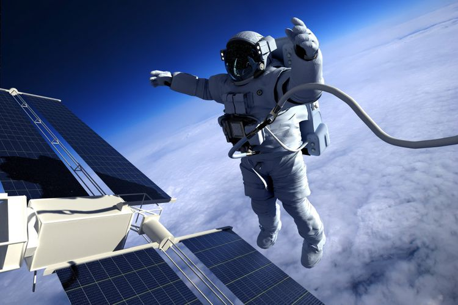

Bagai mana Astronot menjaga kebugaran di Luar angkasa
KAHFI DIRGA CAHYA
KabarKabur.com - 26/09/2017, 17:27 WIB

Ilustrasi astronot di luar angkasa (1971yes)
KabarKabur.com - Dua pekan lalu, astronot Peggy Whitson menginjakkan kaki di Bumi untuk pertama kalinya sejak 288 hari di luar angkasa.
Bila dihitung dari ekspedisi ruang angkasa pertamanya pada tahun 2002, perempuan berusia 57 tahun itu menghabiskan 665 hari di luar angkasa, sebuah catatan waktu terlama di luar angkasa--dan entah bagaimana, selama masa ini, dia tetap benar-benar fit. Pertanyaannya adalah, bagaimana astronot berolahraga di luar angkasa?
Olahraga mungkin bukan sesuatu yang menurut Anda penting dilakukan oleh astronot, apalagi dengan eksplorasi dan penelitian yang harus dilakukan setiap hari. Tapi bekerja di luar angkasa sama pentingnya seperti di Bumi, bahkan bisa lebih dari itu.
Menurut Digital Trends, rata-rata orang yang berada di luar angkasa kehilangan sekitar 11 sampai 17 persen dari kekuatan, 10 persen daya tahan, dan hingga tujuh persen kepadatan tulang mereka. Untuk mencoba dan mengimbangi efek ini, NASA meminta astronotnya untuk tetap berolahraga selama dua setengah jam dalam sehari.
Stasiun Luar Angkasa Internasional (ISS) dilengkapi dengan tiga mesin untuk para astronot berolahraga: sebuah stationary bike, treadmill, dan mesin angkat besi yang disebut ARED (Advanced Resistive Exercise Device). Masing-masing alat tersebut dirancang khusus untuk pemakaian di ruang angkasa, karena peralatan latihan normal tidak ada gunanya dengan gravitasi nol.
Misalnya ARED, jika Anda mencoba mengangkat dumbel biasa di luar angkasa, maka tidak akan terasa berat sama sekali, sehingga olahraga pun tidak akan ada gunanya. Oleh karena itu, mesin ini menggunakan flywheels dan vacuum cylinders untuk menciptakan ketahanan. Astronot bisa melakukan latihan seperti squat, bench press, dan deadlifts. Saat mereka menggunakan treadmill, mereka harus diikat agar tidak melayang.
Sejak menerapkan perubahan ini, "awak kapal kami kembali dalam kondisi yang jauh lebih baik, mereka pulih lebih cepat," Richard Scheuring, ahli bedah penerbangan NASA mengatakan kepada Engadget.
"Umumnya, jika astronot mengikuti program pemulihan pasca-terbang dan mereka bekerja keras di luar angkasa, dalam kurun waktu 30 hari setelah kembali dari misi selama enam bulan, kami dapat memulihkan kembali fleksibilitas dan stamina kekuatan mereka," ujarnya.
Jadi jika astronot bisa berolahraga di luar angkasa, mungkin akan ada pertanyaan lain seperti apakah bisa berhubungan seks di luar angkasa? Jawabannya, mungkin. "Namun ada lebih banyak hal berbahaya yang bisa dilakukan di luar angkasa daripada itu," kata astronot Mike Massimino kepada Gizmodo.
"Jika Anda mencari seks bukan untuk berkembang biak tapi hanya untuk pengalaman, itu mungkin, tapi bagaimana janin berkembang dalam gravitasi nol? Mungkin tidak akan berjalan dengan baik."
penulis :Kahfi Dirga Cahya
Editor :wishnubrata
sumber : meanshealth